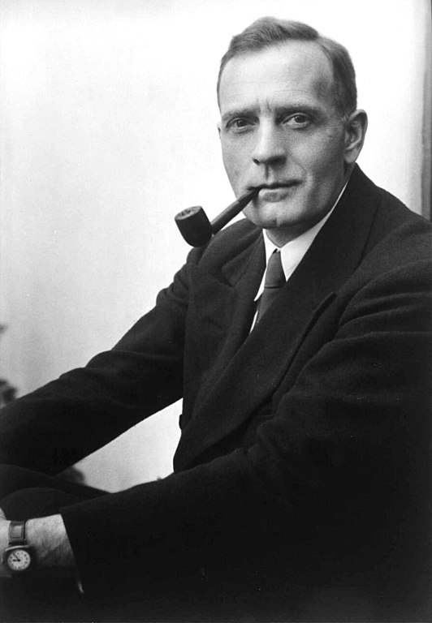
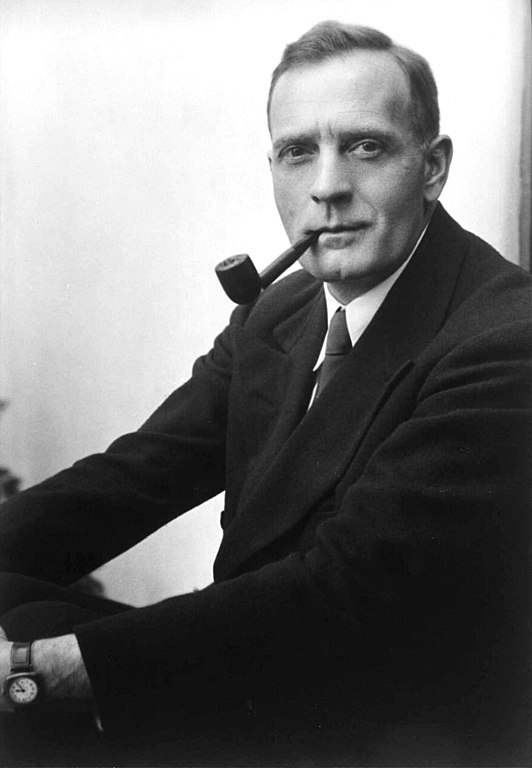

Les galaxies
CEA Explorer et comprendre l’Univers
7 mai 2020
- Examen final
- Structure de la Voie lactée
- Rotation des galaxies et matière sombre
- Loi de Hubble et expansion de l’Univers
Examen final
Examen final (20%)
- 21 mai 2020 de 8h00 à 13h00
- Examen individuel sur Teams
- Questions à choix multiples, courtes réponses
- Examen portant sur toute la matière du cours
- Documentation permise
- Consulter un autre humain est interdit, le travail doit être votre travail personnel
Structure de la Voie lactée
Vue du dessus
Vue de côté
{kind=link}
Amas globulaire
Orbite des étoiles autour du centre galactique
{kind=link}
Rotation des galaxies et matière sombre
Comment évaluer la masse d’une galaxie?
Relation luminosité-masse
- Majorité des étoiles moins brillantes que Soleil (M et K)
- 4 masses solaires → 1 luminosité solaire
- Luminosité de la galaxie : 25 milliards de luminosités solaires
- Masse de la galaxie : 100 milliards de masses solaires
Rotation de la galaxie
Rotation de la galaxie
Observations combinées avec la troisième loi de Kepler :
500 milliards de masses solaires
Matière sombre
Loi de Hubble et expansion de l’Univers
Univers en expansion
 
